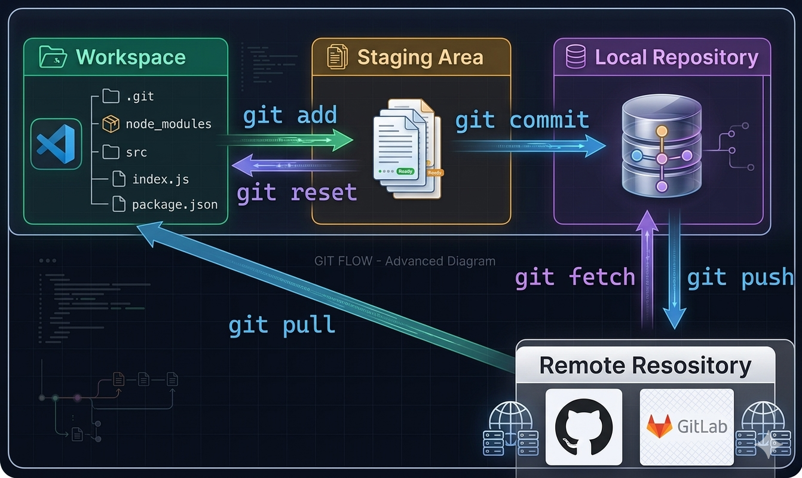
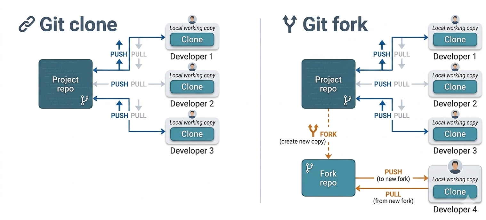

Es la carpeta de tu computadora donde estás escribiendo el código o los documentos. Aquí es donde los archivos están "vivos" y puedes cometer errores libremente.
Imagina que vas a enviar un paquete por correo. El Staging Area es la caja abierta. Aquí vas metiendo solo los archivos que ya terminaste y que quieres que formen parte de tu próxima "versión oficial".
git add: Es el acto de meter un archivo dentro de esa caja.git reset: Si te arrepientes y quieres sacar algo de la caja antes de cerrarla, usas este comando.Cuando decides que lo que hay en la "caja" (Staging Area) está perfecto, cierras la caja con cinta adhesiva y le pones una etiqueta con la fecha y una descripción (ej: "Se arregló el error del botón").
git commit: Guarda esa caja de forma permanente en el historial de tu computadora. Ahora tienes un "punto de control" al que puedes volver si en el futuro algo sale mal.Hasta aquí, todo ha pasado solo en tu computadora. El Remote Repository (como GitHub o GitLab) es un servidor en internet donde guardas una copia de seguridad y compartes tu trabajo con otros.
git push: "Empujas" tus cajas (commits) desde tu computadora al servidor para que otros las vean.git fetch: Es como asomarse a ver si alguien más ha subido cambios nuevos al servidor, pero sin traerlos todavía a tu mesa de trabajo.git pull: Traes los cambios nuevos del servidor directamente a tu Workspace para estar actualizado con lo que hicieron tus compañeros.
Un Fork es una copia completa e independiente de un repositorio remoto que alguien más ha creado. Es como si tomaras un proyecto que te interesa y dijeras: "Voy a hacer mi propia versión de esto en mi cuenta de GitHub".